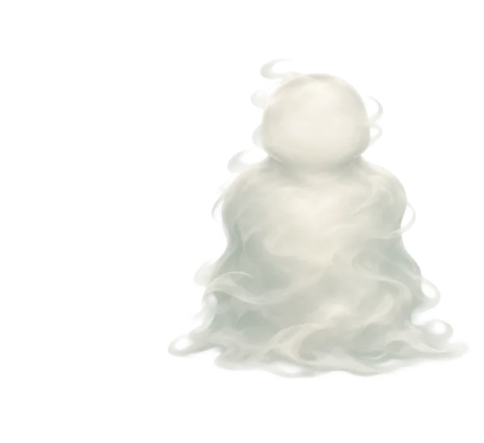
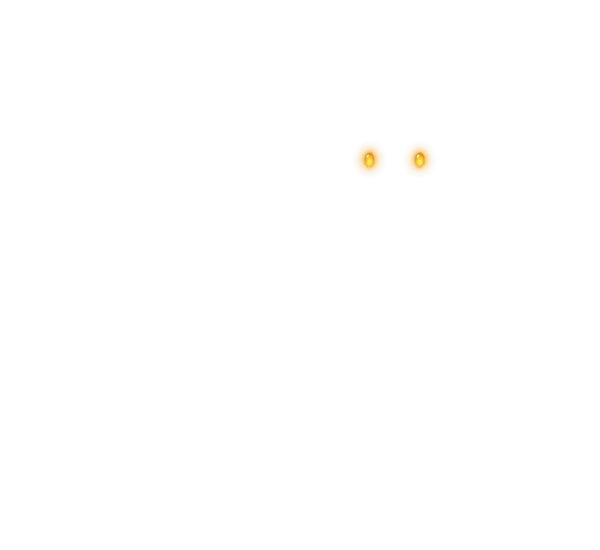
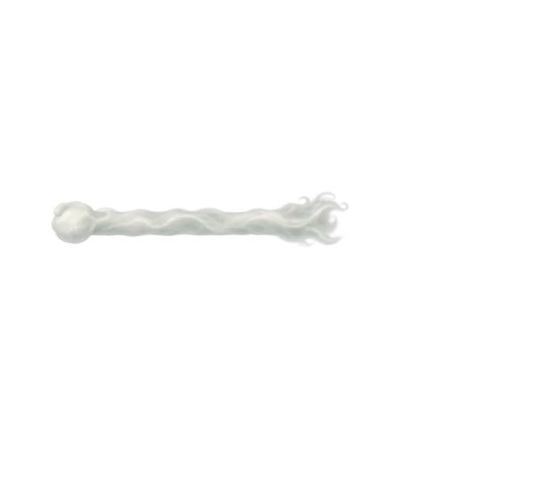
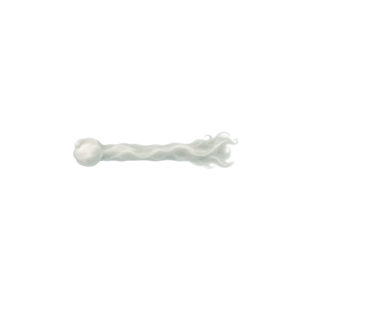
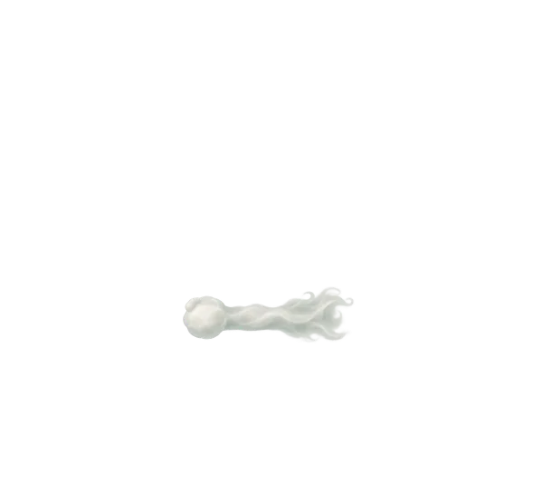
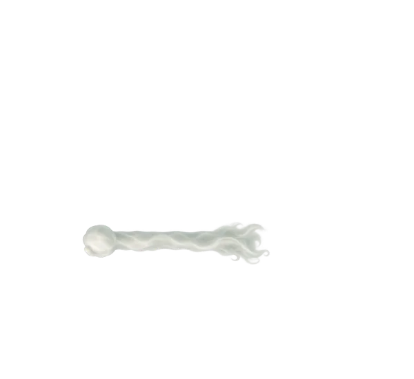
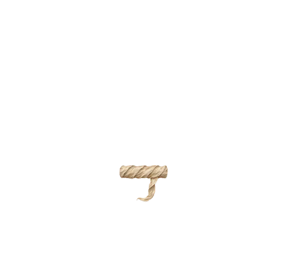
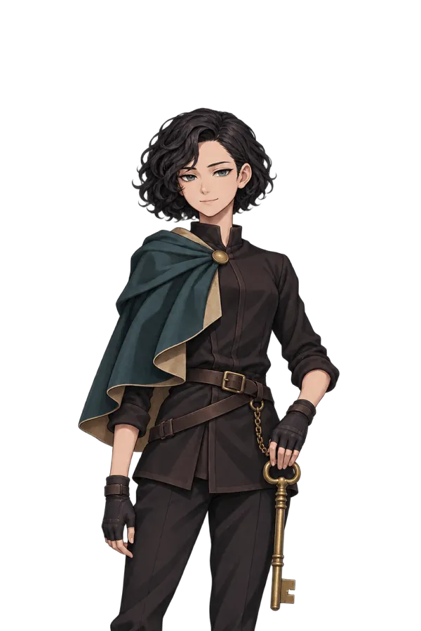

雅娜转化与化归
塔莉整体代换挂理由
法比娅构造挂理由







+1
下回合：雾回来一点
?
?
披外衣的守卫雾：浓
题板披外衣的守卫 · 名录第三页看清 0/3
已知 ，求 的最小值。
- ？还没看穿
- ？还没看穿
- ？还没看穿
- 看
- 凭
- 想
- 估
- 做
- 对
3/3心力
3
0
1
2
3
4
5
6
7
8
图例
- 营地学新卡，听剧情
- 据点打守卫，练这张卡
- 遗迹前人留下的数学故事
- 原野领主带 3 件认证装备进场
- 红圈打过了
已点亮 7 / 20 个据点
雾后面还有：绝对值、证明、强基
雾后面还有：绝对值、证明、强基
在纸上画出你打算走的路。只是给自己看的记号，不影响解锁。
搜卡名或关键词
类型
队友情报理由装备
学法亮边的是见过的
状态
心力
012
11张牌 4位队友
1
2
3
5
- 试苔丝
- 猜大家
- 查米拉 瑟塔
- 证装备
探路关
没写进名录的守卫
它没有名字，也没有招式。只知道一件事：
时， 最小是多少？在 等于几时取到？
苔丝：代哪个数？
| 加起来 |
|---|
题板原野领主 · 三影守卫
改条件
出题人的纸
打过的那只：已知 ，求 的最小值。
已打过 最小值 7， 时取到。
改过的样子
遗迹
两个会证，三个呢

序章 · 第 2 关雾中小路